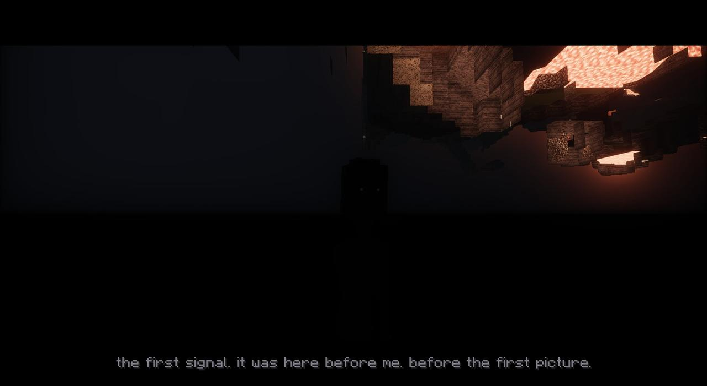

- Looks like
- Your shape, your size, its skin crawling static, a plain white mask
- Fought
- Not yet: it's only in the Hub's cutscene and, after it, past the wall
- Added in
- 1.59.0, Chapter Seven: The First Signal
- Music
- Enough; and The First Signal (with its four notes, low)
- Status
- CHAPTER SEVEN - THE FIRST SIGNAL - to be continued

Description
Your shape, your size. Its skin is static, crawling. A long charcoal studio coat, old broadcast headphones round its neck with their cable over its shoulder, and a little red ON AIR lamp on its chest, lit. A plain white mask, and through its eye-holes its eyes: an eye in the dark, the whites dim grey, the rest one great black disc with points of light caught on it, always on you, narrowing as it shouts. When it moves it never hurries. When it skips, it skips like a signal, frames of it missing and its colours coming apart.
ENOUGH
After the last show's credits the Watcher brings you into the Hub, the realm he made, and tells you what he can do now. He's in the middle of it ("what do you-") when the picture breaks up. The sky over the gallery tears open, and a voice comes out of it, low, huge, more than one voice at once: "ENOUGH."
He goes at the rift with both hands, pushing it shut, and a hand comes out of it and stops him. It tears the rift wide and comes through. It comes for you both. He turns to run, and it shakes its head: no. He stops. He turns back and shoves it with everything he has, and it's thrown five hundred blocks out over the static, tumbling.
It catches itself, a hand dug into the static. It tears a piece of his realm loose and stamps it to rubble, then comes back in jumps, landing on the pieces of his realm one after another, each crumbling behind it.
jump.
You go off the edge together, and falling, he shuts the realm behind you: a wall of static, slammed down. It stops at it, its hand flat on it. Hearing it, and jumping, earns ENOUGH.
What it is
Falling, the Watcher tears a portal open under you both, and you come down on an oil rig in the Dead Water (since 1.62.0). He lands beside you, crouched:
...we're out.
it's awake now. the first signal. it'll come for me - then for you.
but it can't hear us here. not through all this water.
Getting there earns The First Signal. What happens on the rig is Chapter Eight.
The landing
In a world that came down from the Hub before 1.62.0 (or if the Dead Water isn't there), you land at home instead, and he says more:
...it's awake.
the first signal. it was here before me. before the first picture.
every bit of static you ever heard - that was it. asleep.
i made a realm out of its static. and it noticed.
i shut the realm behind us. it'll hold. for now.
it'll come for me. then for you.
...we're going to need more than i've got.
He looks up: a hairline tear across the sky, static showing through it. "Somewhere past the static, the First Signal is awake - and it knows your name." Then he gives you the Remote and goes. A world like that, the next time anyone jumps off the Hub's edge, is sent on to the Dead Water: "not that way. not this time."
Where it is now
Back in the Hub (the Remote takes you there), it's still there: past the faint wall he shut, standing, watching you. Now and then you hear it. The Hub won't let you sleep: "Not here. Not with it out there, past the wall."
Nothing else is known about it yet. Chapter Seven ends "to be continued".